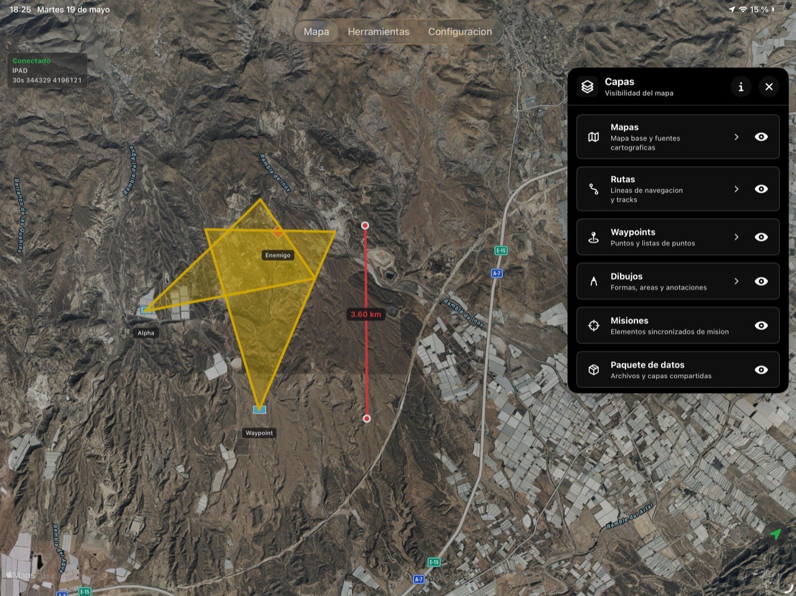
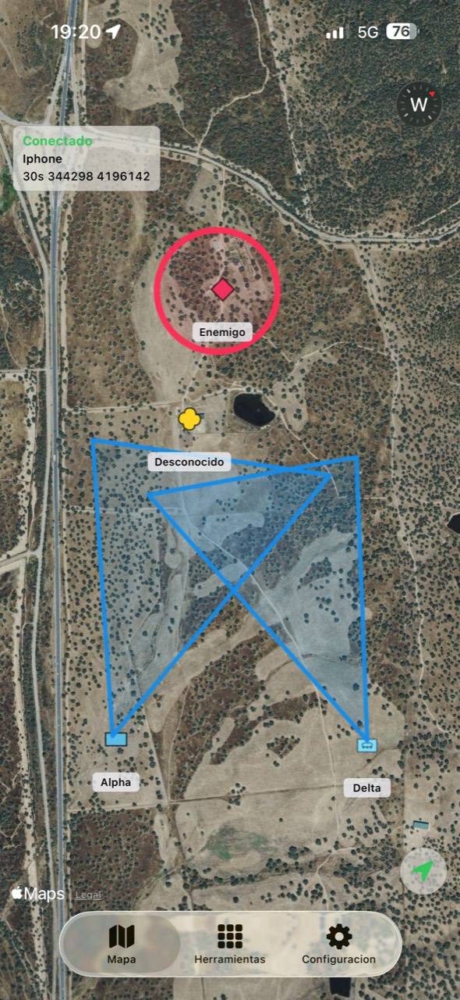

Mapas
Visualiza y trabaja sobre mapas digitales adaptados a la navegación táctica.
App iOS de navegación táctica
Navegación digital avanzada para operaciones, rutas, coordinación sobre el terreno y conexión con el ecosistema TAK.
Qué es Centinela
Centinela es una app de navegación táctica para iPhone e iPad pensada para planificar, visualizar y coordinar información sobre mapas digitales. Permite trabajar con rutas, waypoints, capas, contactos, misiones y paquetes de datos desde una interfaz directa, preparada para conectarse con flujos del ecosistema TAK cuando la operación lo requiera.
Herramientas
Visualiza y trabaja sobre mapas digitales adaptados a la navegación táctica.
Conecta la app con el ecosistema TAK para integrarse en flujos operativos compatibles.
Activa o desactiva información adicional sobre el terreno según tus necesidades.
Registra tus desplazamientos y guarda recorridos para analizarlos o repetirlos.
Planifica trazados y referencias para moverte con mayor control.
Marca puntos clave sobre el mapa para navegación, referencia o coordinación.
Traza líneas, zonas, símbolos o anotaciones directamente sobre el mapa.
Calcula distancias y referencias de forma rápida sobre el terreno.
Accede a funciones de vídeo para mejorar la observación y el seguimiento.
Mantén la información de misión alineada entre usuarios y dispositivos.
Gestiona contactos y elementos conectados dentro del entorno de navegación.
Comunica información relevante entre usuarios durante la operación.
Prepara y comparte conjuntos de información táctica de forma estructurada, incluyendo flujos compatibles con TAK.
Formulario rápido para evacuación médica y transmisión de información crítica.
Tutoriales
Aquí encontrarás los tutoriales destacados para empezar a usar Centinela.


Disponible en iPhone e iPad
En iPhone, Centinela prioriza acceso rápido a mapa, ubicación, waypoints y herramientas. En iPad, ofrece más espacio para revisar capas, rutas y datos de misión.
Disponible en Apple Watch
En Apple Watch, Centinela te proporciona acceso rápido a información de ubicación, waypoints y alertas táticas. Ideal para mantener la coordinación sin necesidad de sacar el iPhone de tu mochila o equipamiento.